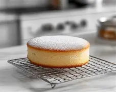
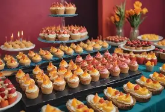

Fresh Bakes

Enjoy breads, pastries and sweet treats prepared for freshness and flavour.
 Joss Sweet Crumbs Bakery
Joss Sweet Crumbs Bakery
Freshly baked with love
Welcome to Joss Sweet Crumbs Bakery, where homemade flavour, beautiful bakes and friendly service come together.
Why choose us?
From a quick morning treat to a celebration cake, we prepare our products with care and attention to detail.

Enjoy breads, pastries and sweet treats prepared for freshness and flavour.

Tell us your theme, flavour and occasion and we can help create a special cake.

Choose platters and baked treats for meetings, celebrations and special events.
Visit us
We welcome walk-in customers and enquiries for larger orders.
Opening hours
Monday–Saturday: 07:00–17:00
Sunday: 08:00–14:00
Phone
+27 00 000 0000
Email
hello@josscrumbs.example